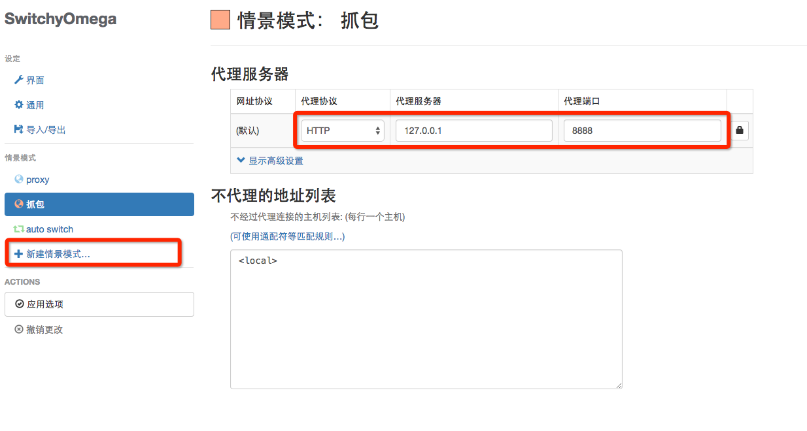
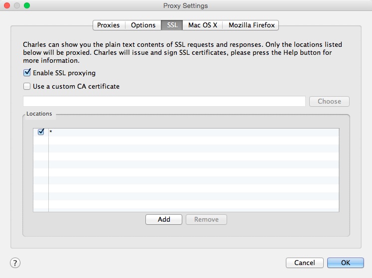
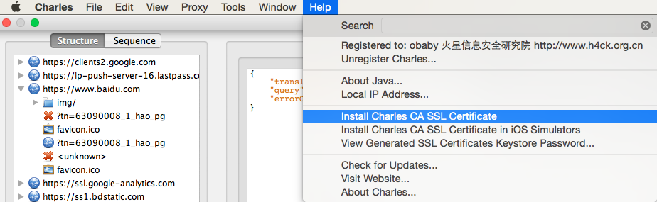
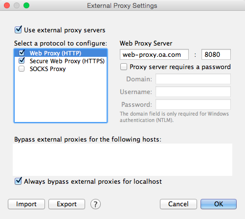
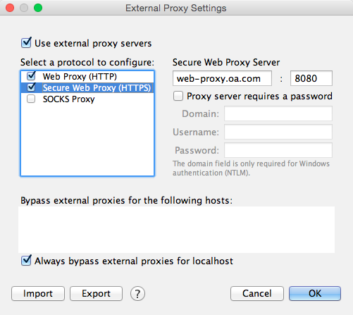
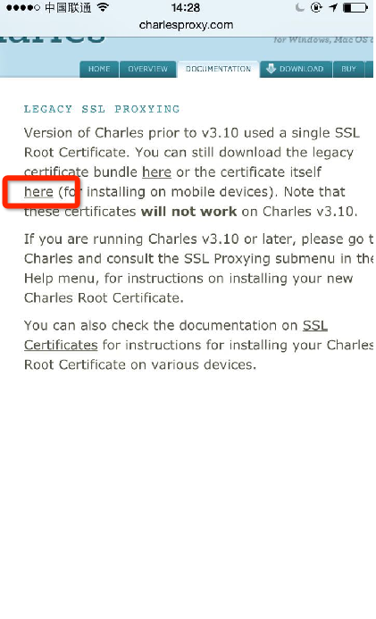
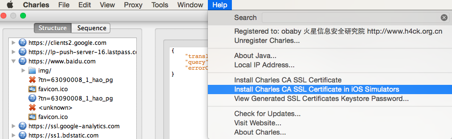
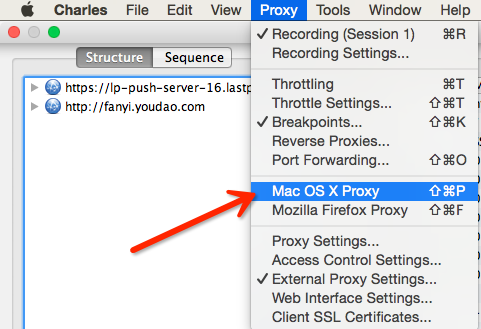
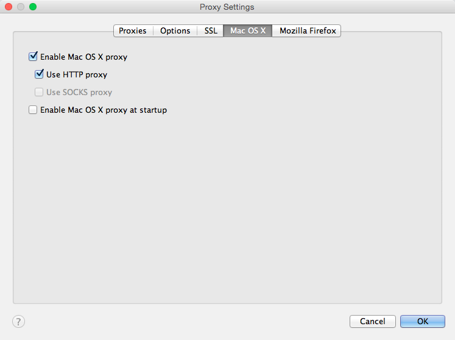

chales调试进阶
Charles是OS X系统上一个非常好用的抓包软件(因为Fiddler没有Mac版)，而在抓包时候遇到一些比较特殊的情况，在这里记录下来。关于Charles如何抓去常规的http协议包已经有很多的教程。
以下总结 charles 抓取 Mac 本机的包和如何抓取手机上https的包。
抓取本机 http 的包 Mac下抓取本机http的请求包只需要在浏览器中配置好相关的代理，建议使用chrome浏览器，安装 SwitchyOmega 这个 chrome 插件 (类似的切换代理插件也可以)，并且将代理的请求到 charles 配置好的 127.0.0.1:8888 即可。
抓取本机 https 的包 需要勾选
proxy setting下 ssl tab的enable ssl proxying， 并将监听的主机设置为*， 表示监听本机所有https网络流量。
 接下来需要安装 charles 的一个SSL 根证书。
 并信任该根证书。如果在局域网(如公司专有网络下)下调试 本机 http 或 https 设置同 『抓取本机 https 的包』 ，需要多加一项，在
external proxy setting中 勾选use external proxy servers并设置如下。 
同一网段下调试手机的 https 请求。 需要用手机访问 http://www.charlesproxy.com/documentation/additional/legacy-ssl-proxying/ (该页面貌似需要挂着charles代理才能正常访问)，即手机需要手动挂http代理到电脑的IP地址，在网络设置中查看Mac机地址。 然后点击下载证书本身，会弹出一个需要安装信任证书的页面，安装成功后即可用charles调试https。

然后步骤同调试http， 如果出现 "charles ssl host name lookup failure” 表示证书安装不成功。抓取 x-code 模拟器 中的 https 请求包。(需要在 charles 3.9.3版本以上)
help-install charles CA SSL Certificate in IOS Simulators如果需要抓取本机除浏览器外的其他软件发出的网络请求包，则需要勾选下面这个地方。 
同理勾选下面这个地方亦可。
